CueVR
Snooker and pool on a full-size table, in your own room.
Player’s guide
MIXED REALITY
7 GAMES
8 OPPONENTS
18 CUES
PLAY A FRIEND
CueVR puts a full-size table in the room you are standing in. There is no shot meter and no aiming line: you hold a cue in both hands and play the shot.
You need a Quest 3 or 3S. You also need enough clear floor to walk along one side of a table. The game runs in passthrough, so you will see your own room around the table and can walk around your own furniture.
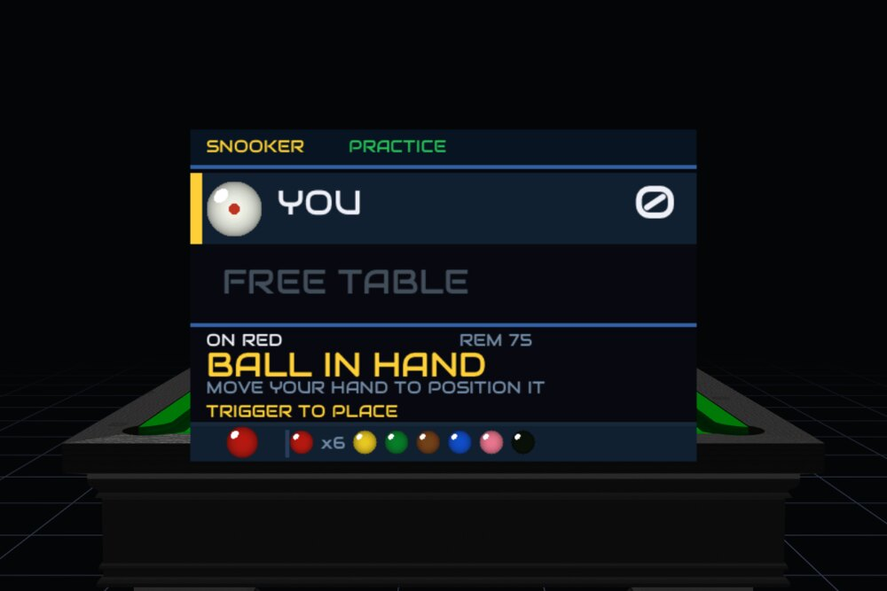
Where the table sits and how high it stands is the first thing to set.

| Control | What it does |
|---|---|
| Left stick | Slides the table around the room. |
| Right stick, left and right | Turns the table. |
| Right stick, up and down | Raises and lowers the table. |
| A | Finished. Saves the position. |
A real snooker table has its bed about 85 cm off the floor, which is where the screen starts. You do not need a room big enough for the whole table. If space is tight, bring the part of the table you need into the space you have: turn the table with the right stick and slide it with the left, then play. You can do this as often as you like, including in the middle of a frame.
The table stays where you put it. To move it later, press the MENU button and choose PLACE TABLE.

Both controllers hold the cue. The buttons do a small number of jobs, and the two side triggers are the ones worth learning.
One hand is your bridge hand, the one the cue rests on at the front. The other is your butt hand, the one you hold the end with and stroke with. Which physical controller is which depends on the handedness setting, so everything below is written in terms of the two hands, not left and right.
| Control | What it does |
|---|---|
| Bridge hand | Carries the front of the cue. The cue pivots on it, so this hand is what aims. |
| Butt hand | Holds the end of the cue. Moving it forward is the stroke. |
| Butt hand trigger | Takes the shot. Pull it to commit — that locks the line the cue will travel along, so your aim cannot drift while you deliver. Keep it held and move the hand forward through the ball. Release when the shot is played. |
| Butt hand side trigger (hold) | Slides the cue through your bridge, so more or less of it sticks out in front. This is how you shorten up for a shot against a cushion. Your aim stays where it is. |
| Bridge hand side trigger (hold) | Sets where the cue sits relative to your controller, so the bridge falls in a position that is comfortable for you. Hold it and move the hand; the cue stays put and the offset changes. |
| Bridge hand side trigger (double tap) | Puts that offset back to the default. RESET CUE on the controls screen does the same thing. |
| Trigger (in menus) | Selects the row or item you are pointing at. |
| A and B | Confirm and go back. |
| MENU | Pauses the game. |


The cue is a real object between your two hands. Where you point it is where the ball goes, and how fast you move it is how hard the ball is hit.

You do not have to walk to the far end. Open the pause menu, choose PLACE TABLE, and turn and slide the table until the shot is in front of you. For a shot tight against a cushion, hold the butt hand's side trigger and pull that hand back to shorten the cue.
Seven games, each on the table it is really played on, with its own rules, rack and pocket shape.
The full game. Pot a red, then a colour, then another red, until the reds are gone. The colours are put back on their spots each time until the last red has been potted, and then you clear them in order from yellow to black.
Reds are worth one point. Yellow is two, green three, brown four, blue five, pink six and black seven. The table is big, the pockets have rounded jaws, and a long pot is a genuine test.
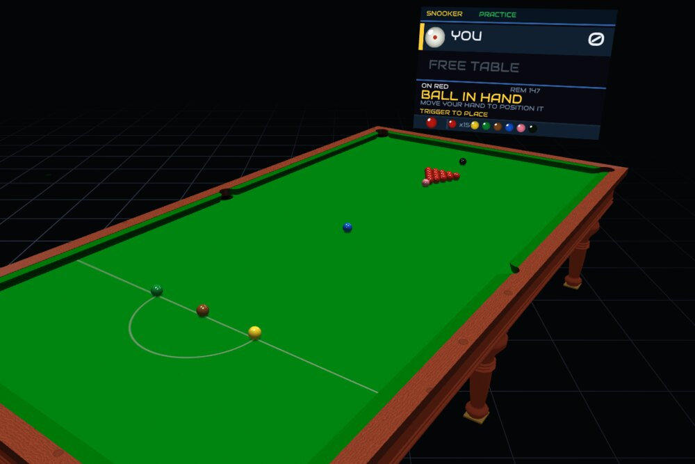
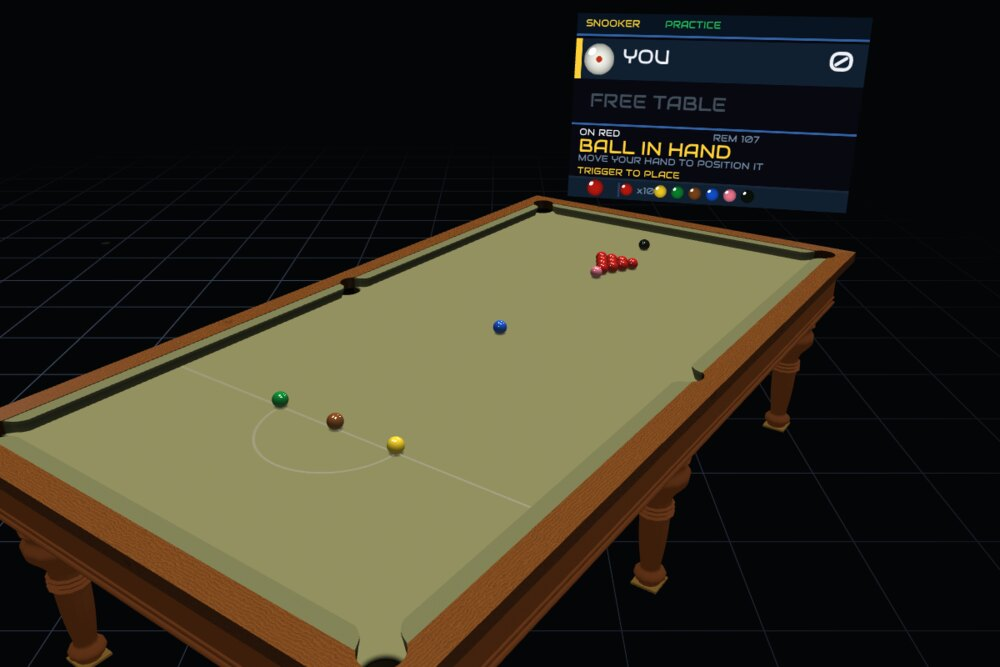
Snooker with the same rules and fewer reds, on a smaller table. A frame takes roughly half as long, and a clearance is within reach much sooner.
A good choice if you want proper snooker but do not want to commit to a full frame.
The quickest snooker there is. Six reds on a seven-foot table, so everything is reachable and frames are short.
This is the easiest way into snooker if you have never played it, and the best one for a small room.
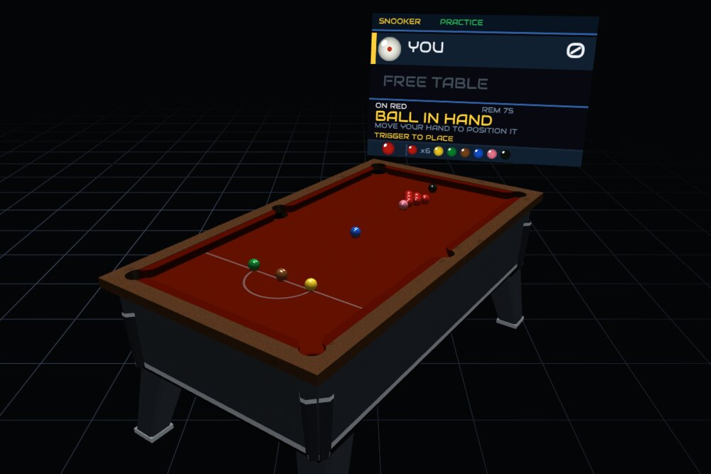
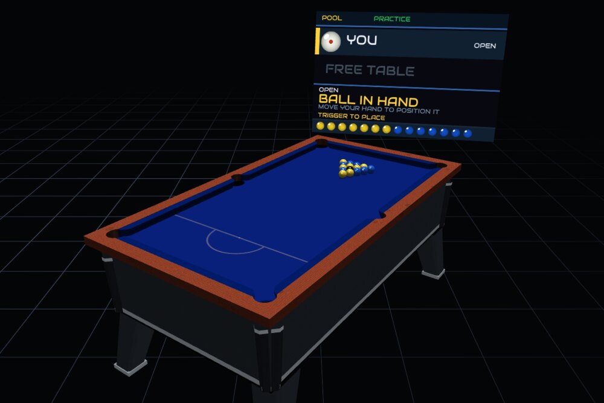
The pub game. Take reds or yellows, clear your seven, then pot the black to win. The pockets are small and rounded, so pace matters more than it looks.
Fouls give your opponent two shots, which carry until they pot a ball.
Solids or stripes, then the 8 ball. The table is nine feet with wide, straight-cut pockets that accept a ball more easily than a snooker pocket does.
The bigger table means longer shots and more room to move the cue ball around, so position play matters.
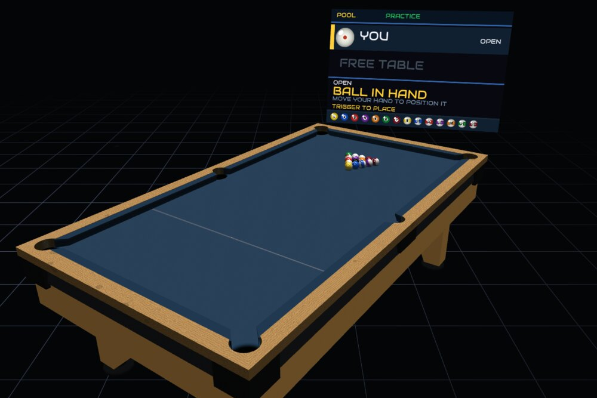
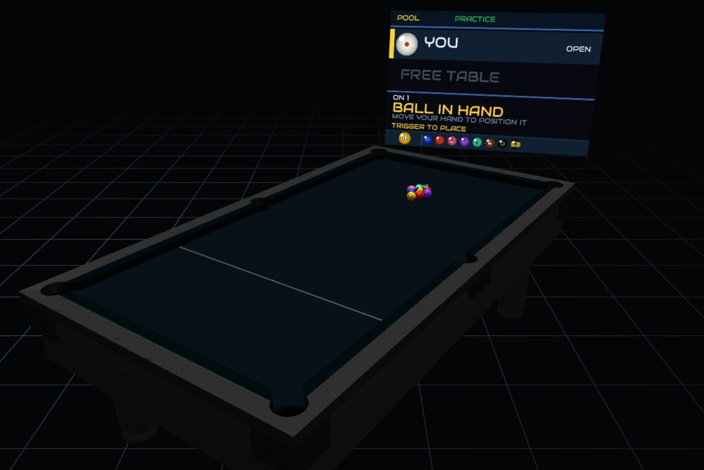
Always hit the lowest ball on the table first. Pot the 9 and you win, so a lucky combination can end a frame at any moment.
The player after the break may play a push-out: one shot with the usual rules suspended, after which their opponent chooses who plays next.
Pool balls and pool rules on a table built like a snooker table: ten feet long, with tight rounded pockets that punish a ball hit too hard.
It is the hardest of the seven to pot on, and the most satisfying when you do.
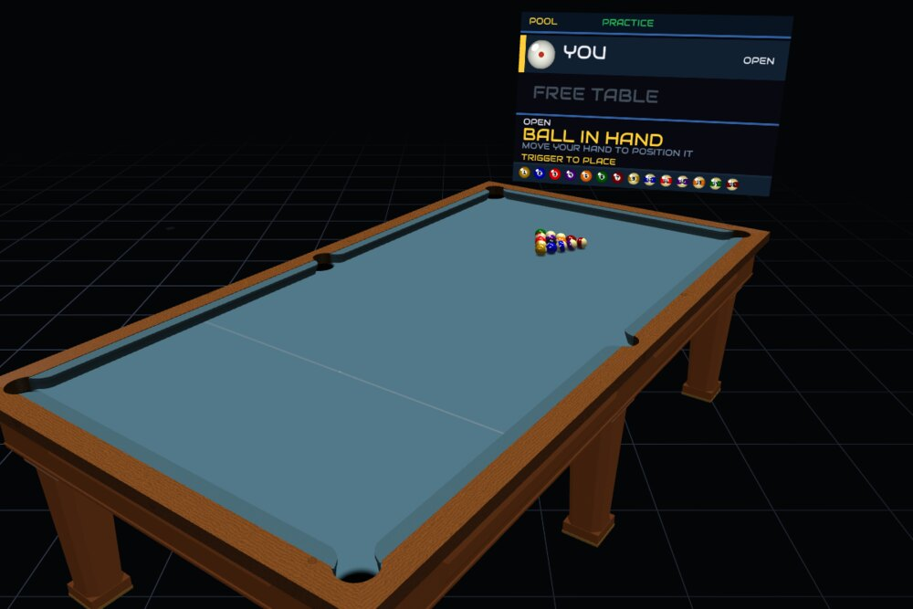
Match length is set on the main menu: one frame, or best of 3, 5, 7, 9 or 11. The break alternates between players and the score carries through the match.
Eight sets. Choose the one you can read most easily from the far end of the table.


The rules are enforced for you, and called out loud. You do not have to keep score or remember what is on.

At snooker that includes reds and colours in the right order, colours going back on their spots, free balls after a foul, called misses, and the final clearance from yellow to black. At the pool games it includes your group, the two-shot carry at UK 8-ball, and the push-out at 9-ball.
You are asked what you want to do. You can play on from where the balls have finished, or make your opponent play the shot again. If a miss was called and the table can be put back as it was, that is offered too. The referee announces what you chose.
The REF VOICE row on the main menu sets a female voice, a male voice, or no voice at all. The scoreboard stays either way.
Eight computer players. They differ in how straight they hit the ball, how much they think about where the cue ball finishes, how much risk they take, and how well they get out of trouble. The bars below are their actual settings, not a rough guide.

Takes on everything and misses most of it. Hits the ball far too hard and has no idea where the cue ball will finish. Start here.

Will not take on a pot she does not fancy, and plays safe instead. You will not get many free chances, but she will not punish you hard either.

Plans properly and is good at breaking up awkward clusters, but he is not the straightest potter. He will build a break if you let him.

Fast and attacking. Hits everything with pace and takes on pots other players would leave alone. Streaky, and dangerous when it comes off.

Accurate, balanced and hard to fault. The first opponent who will make you work for the frame rather than wait for a mistake.

Pots nearly everything he looks at, from anywhere. He does not think much about the next shot, so his breaks tend to end by themselves.

Very straight and very controlled. She plays position on every shot, breaks clusters open when she needs to, and will punish a loose safety.

Aims perfectly and thinks about every shot for as long as it takes. In testing it made nine centuries in forty frames of snooker, with a best break of 134.
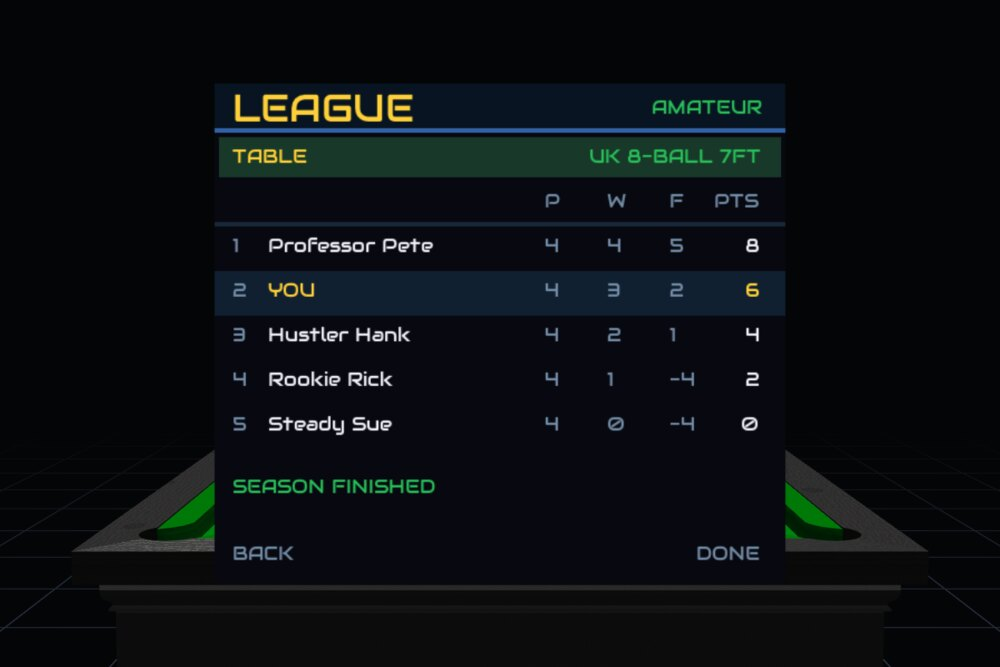
A season of matches against the other players, with a league table.


You work up through the field as you win. Your progress is saved, so a season is something you can come back to over several sittings.
Two ways to play without an opponent.
Free practice gives you the table on your own with no rules and no scoring. Put the balls wherever you like and hit them.
Challenges set you a goal on a fixed layout — clear the table, or reach a score. Each one is judged over a single visit, so a miss ends the attempt and you start again.


Two headsets share one table, either on the same wi-fi or over the internet.


| Option | Use it when |
|---|---|
| LAN (WI-FI) | You are both in the same house on the same network. One hosts, the other joins, and no code is needed. |
| HOST / JOIN | You are in different places. The host gets a code to share; the other player types it in. |
| QUICK | You want a game against whoever else is waiting. |
| BROWSE | You want to see which rooms are open and pick one. |
You both see the same table, the same balls and the same score. You will see your opponent's cue move as they play, and it is the cue they chose, not a stand-in. The referee calls fouls at both ends, and the player who was fouled against makes the decision.
You can change the table, the cloth, the woodwork, the balls, the lighting and what surrounds you. None of it changes how the game plays.
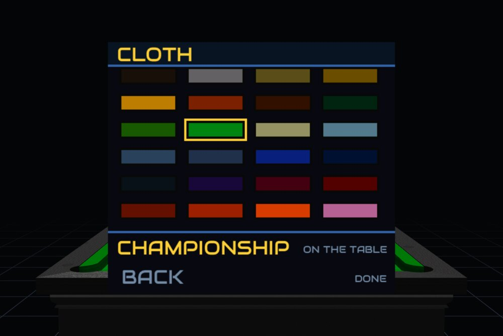
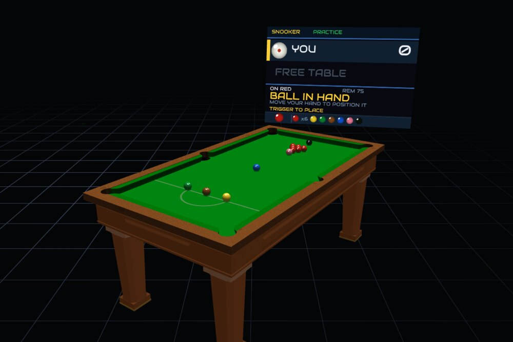
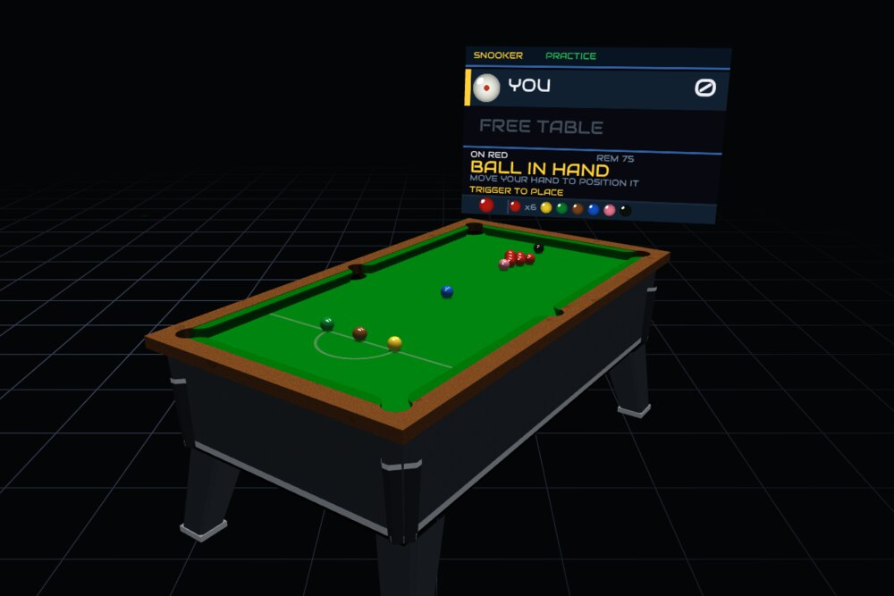
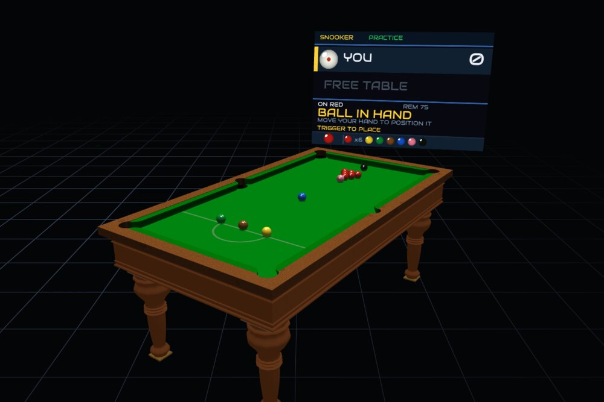
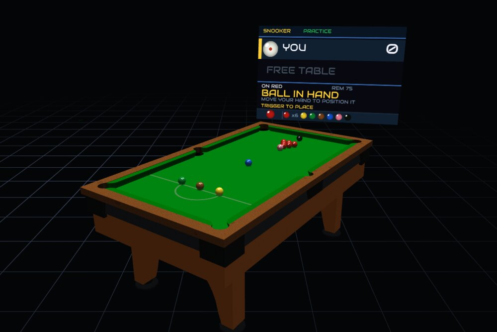


Twenty-four colours. Here are eight of them:


The rest: SILVERTAUPEGOLDNUTMEGRANGER GREENOLIVECHAMPIONSHIPSAGEPOWDER BLUENAVYFRENCH NAVYROYAL NAVYMAROONCHERRYREDORANGE


Eighteen cues, each modelled on a real one. Your choice is saved, and in an online match it is the cue your opponent sees in your hands.


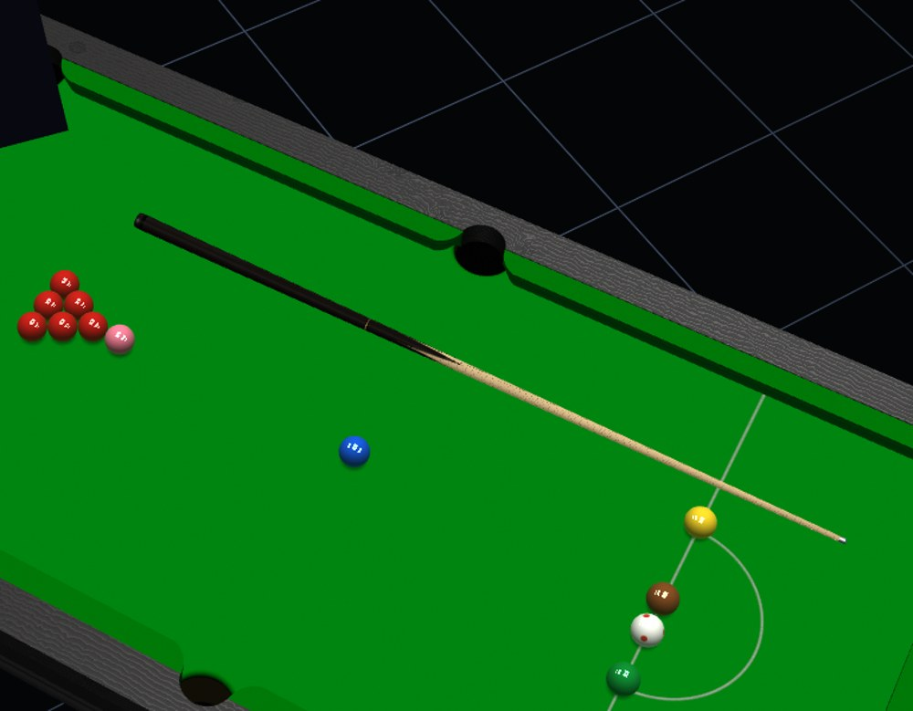
The table is built to behave like a real one. The numbers in the physics engine come from published measurements of real equipment rather than from guesswork.
A cushion returns less of the ball's speed the harder it is hit, so a firm shot comes off the rail relatively slower than a gentle one. Each table has its own rubber: a snooker cushion, a UK championship cushion and an American pool cushion all respond differently.
Every pocket is cut to the shape of the table it belongs to, and what you see drawn on the cloth is exactly what will catch the ball. The jaws take the pace off a firm pot rather than throwing it back out, and a ball hit too hard into a rounded pocket can rattle and stay out.
When the cue ball strikes an object ball, friction throws the object ball very slightly off the line you aimed at. It is small, but it is why a thin cut does not go exactly where the geometry suggests. Screw needs pace behind it to survive the journey up the table, side pushes the object ball and also deflects the cue ball away from your aim, and a ball struck above centre runs on after the contact.
Press MENU, choose PLACE TABLE, and set the height to match a real surface in your room.
Rotate and move the table rather than walking to the shot. Press MENU, choose PLACE TABLE, turn the table with the right stick and slide it with the left until the ball you want is in front of you, then carry on. For a shot tight to a cushion, hold the butt hand's side trigger and pull that hand back to shorten the cue.
Open CONTROLS and choose RESET CUE.
Each end corrects itself from whoever played the last shot, so a small difference should fix itself within a shot or two. If a frame gets stuck, either player can re-rack from the pause menu.
Change REF VOICE on the main menu to the other voice, or turn it off.
RE-RACK on the pause menu sets the table back up without leaving the frame.